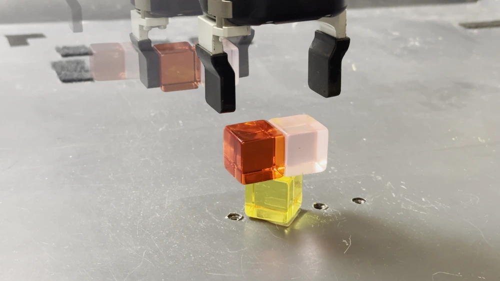
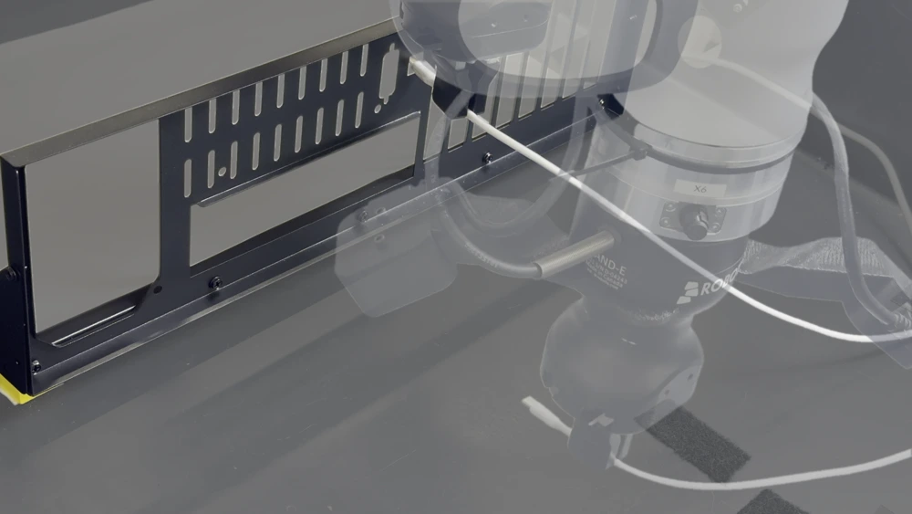
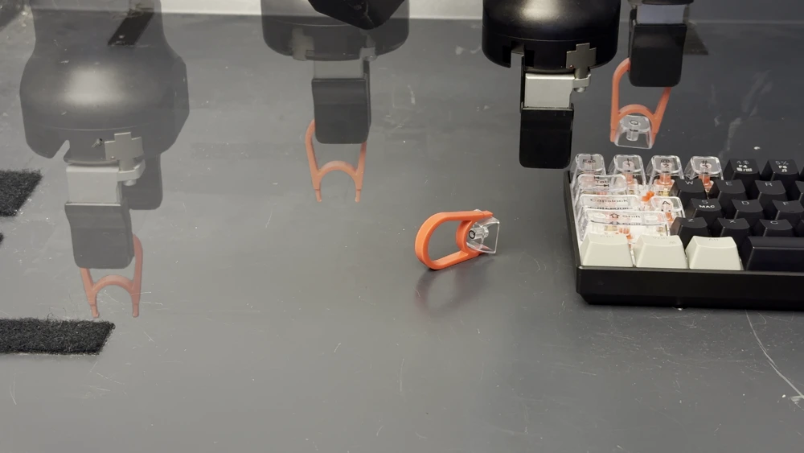
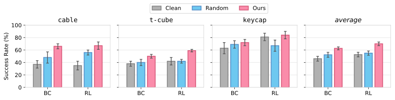
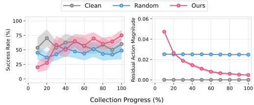
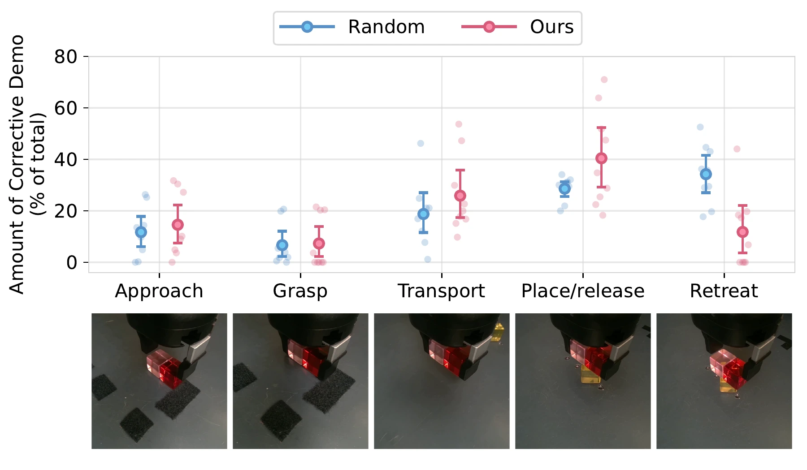

Data Inoculation (DI) is a new paradigm in robot learning where data collection is done by a human providing closed-loop teleoperation commands while a residual policyperturbs these commands. The residual policy is trained online on the growing dataset with RL, so it mimics mistakes a learned policy might make, and the human's continuous correction provide recovery demonstrations. This provides higher coverage and “inoculates” the dataset against the learner's mistakes and improves downstream policy performance.
What's Wrong with Demo Data in Robotics?
Performance of robot learning systems depends highly on the data. Good data should have high coverage:
it should contain a wide range of states to maximize the chance that the policy generalizes to the states that it actually visits at test time.
In practice, collecting demonstration data is largely heuristic and ad hoc, and rarely offers good coverage.
Without good coverage, small errors compound and the policy can quickly go into out-of-distribution states from which it cannot recover.
Is there a principled way to collect robot demonstration data with high coverage?
Previous approaches and where they fall short
Collect with online Reinforcement Learning: this acquires more diverse data at the cost of safety and sample efficiency.
DAgger-style interventions: a learned policy is deployed, and a human intervenes to correct it. This “patches” data after the fact rather than proactively collecting diverse data, relying on chance failures to trigger useful corrections. Once control switches to the human, the trajectory may quickly leave the policy’s state distribution, so only the first few transitions directly supervise its mistakes.
Instrumenting the data collector to collect more "diverse" data: this is hard to do (and scale) in practice because "diverse" is not well-defined.
Adding random action noise during data collection: inefficient because perturbations along
axes that barely influence task success (e.g., yaw rotation in a simple cube pick-and-place task) are uninformative.
Key idea of Data Inoculation. Let the human and a learned policy control the robot together during data collection. Expose the robot to controlled doses of policy-like mistakes, and record how the human recovers.
Our method
Data Inoculation
DI runs two asynchronous loops: a human and a residual policy collect demonstrations together, while an RL learner trains on the growing dataset. The human stays in closed-loop control throughout collection, continuously correcting the policy’s deviations.
1Perturb the Human’s Commands
At each step, the human provides a teleoperation command $\mathbf{a}_t$. The inoculative policy $\pi_\theta$ receives both the current observation $\mathbf{o}_t$ and $\mathbf{a}_t$, and outputs a residual $\Delta_t$. The robot executes their sum:
The residual has unit $L_\infty$ bound, so the executed command differs from the human’s by at most $\alpha$ in each action dimension.
The human sees the resulting motion and counter-corrects through subsequent commands. This pairs perturbations with recovery behavior throughout the trajectory.
Practical considerations
We find that changing the perturbation direction too frequently makes it hard for the human to react effectively. In practice, we only predict the perturbation once every 0.5 seconds (5 control time steps at a frequency of 10 Hz). For all 5 time steps, we add the same perturbation on top of $\mathbf{a}_t$ so that the teleoperator has a chance to correct any mistake that the perturbation induces.
2Learn Residual Policy During Data Collection
The residual policy is learned with off-policy RL on the dataset as it is being collected. The RL learner trains a critic and a residual policy, using a learned human-command model to form the critic’s targets:
Critic $Q_\phi$
We train a critic $Q_\phi(\mathbf{o},\tilde{\mathbf{a}})$ to estimate the value of the perturbed action $\tilde{\mathbf{a}}$ directly rather than the value of the residual action $\Delta$. This allows us to update $Q_\phi$ on any off-policy data, even as the scale of the perturbations changes during collection.
To obtain the Q target, we also train a human-command model $\pi_\beta$ with flow behavior cloning on the original human commands ($\mathbf{a}$) in the same growing dataset. This model approximates the next human command $\mathbf{a}'$, giving the critic loss:
The penalty $\lambda$ discourages large residuals, which helps on tasks requiring precise commands.
The objective is cooperative: maximize task success. Using the same reward-maximizing objective as downstream offline RL is expected to produce deviations resembling a learned policy’s mistakes. Early in training, an inaccurate critic can lead the residual policy into suboptimal states that elicit human recovery. As learning progresses, the residual policy can also assist the teleoperator and improve collection success.
Why learn the perturbations? Random noise can spend the collection budget on irrelevant movements. DI adapts to the task, eliciting corrections where precision matters most.
Update $\pi_\beta$ with flow-matching loss using $(\mathbf{o},\mathbf{a})$
Data collection and model updates run asynchronously on a shared dataset.
Real-World Precise Manipulation Tasks
We evaluate DI on a Franka robot arm with a Robotiq gripper and two wrist cameras. Each task requires careful manipulation, where small errors can determine success.

T-Cube
Balance two cubes diagonally on a third cube. A few millimeters of misalignment can topple the stack.

Cable
Pick up a USB-C cable and insert it through a case opening barely larger than the connector.

Keycap
Pick up a keycap puller, hook it onto the Q key, and use controlled motions to remove the keycap.
Better Data. More Successful Policies.
We compare DI with clean teleoperation and teleoperation with random perturbations. DI improves success rates under both behavioral cloning (BC) and offline RL.

Results averaged over 9 collection seeds for T-Cube and 5 each for Cable and Keycap, with 20 evaluation rollouts per seed. Error bars show standard errors.
35%→ 67%Cable
42%→ 59%T-Cube
81%→ 84%Keycap
Mean success rate: clean demonstrations → Data Inoculation (Offline RL).
Full success rates and standard errors
Success rate (%) ± standard error
Task
Policy
Clean
Random
DI
Cable
BC
37 ± 6
48 ± 9
66 ± 4
Cable
Offline RL
35 ± 7
56 ± 4
67 ± 6
T-Cube
BC
38 ± 4
40 ± 5
50 ± 3
T-Cube
Offline RL
42 ± 6
42 ± 3
59 ± 2
Keycap
BC
63 ± 9
69 ± 6
72 ± 5
Keycap
Offline RL
81 ± 6
67 ± 9
84 ± 6
From Perturbing to Assisting
DI initially lowers collection success while the residual policy is untrained. As it learns, collection success rises and eventually exceeds clean and random collection. Meanwhile, the magnitude of the residual decreases.

Corrections Where They Matter Most
We divide an example t-cube trajectory into five phases and measure where human corrections occur. DI concentrates corrective demonstrations in place/release—the critical phase where imprecise motion can knock over the cubes. Random perturbations elicit many corrections during the less demanding retreat phase.

Better demonstrations include how to recover. DI makes data collection a shared process: the policy exposes gaps, and the human supplies the corrections.
BibTeX
@misc{li2026robotic,
title = {Robotic Data Inoculation},
author = {Li, Qiyang and Zhou, Zhiyuan and Xu, Charles and Levine, Sergey},
year = {2026},
eprint = {2610.39054},
archivePrefix = {arXiv},
primaryClass = {cs.RO},
url = {https://arxiv.org/abs/2610.39054}
}